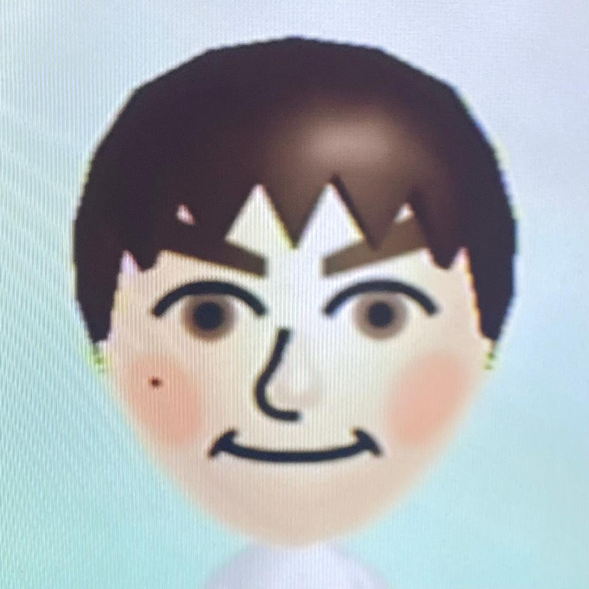
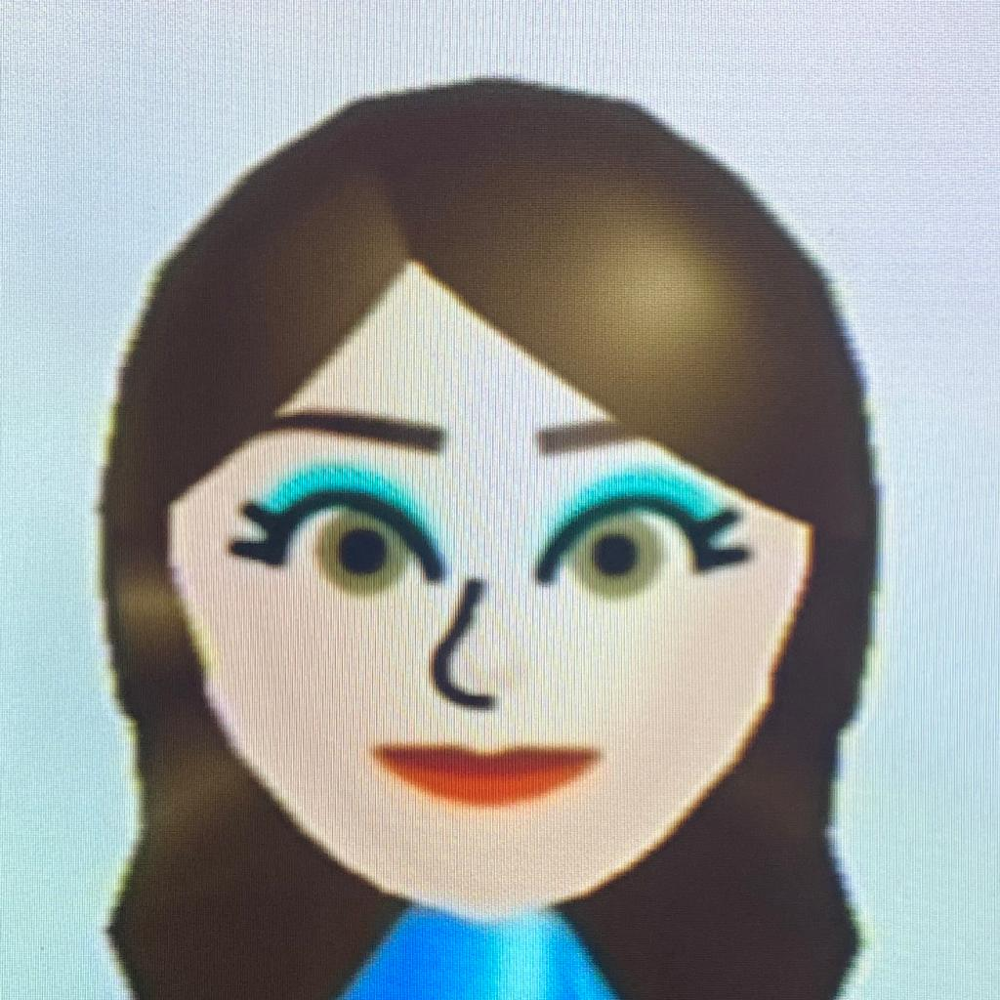
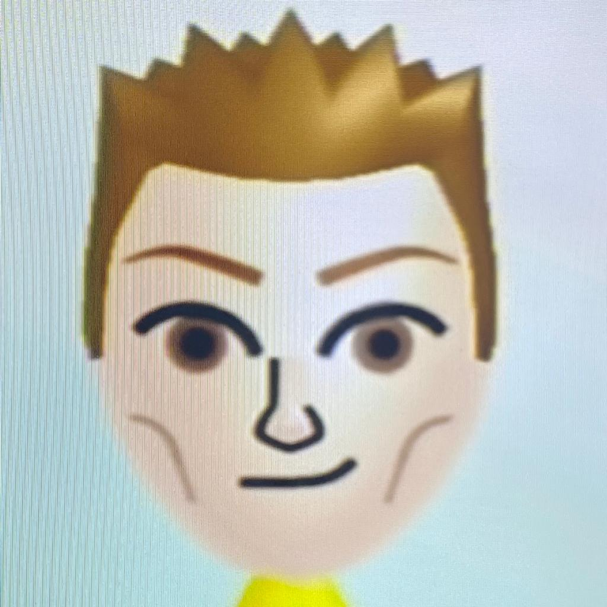
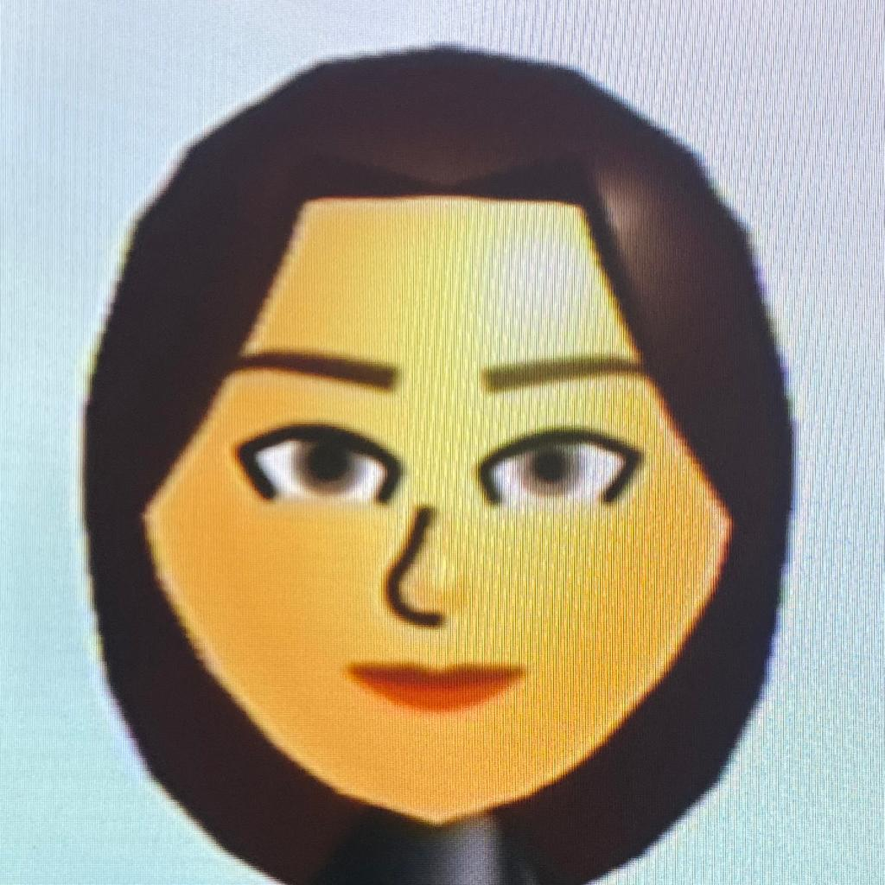
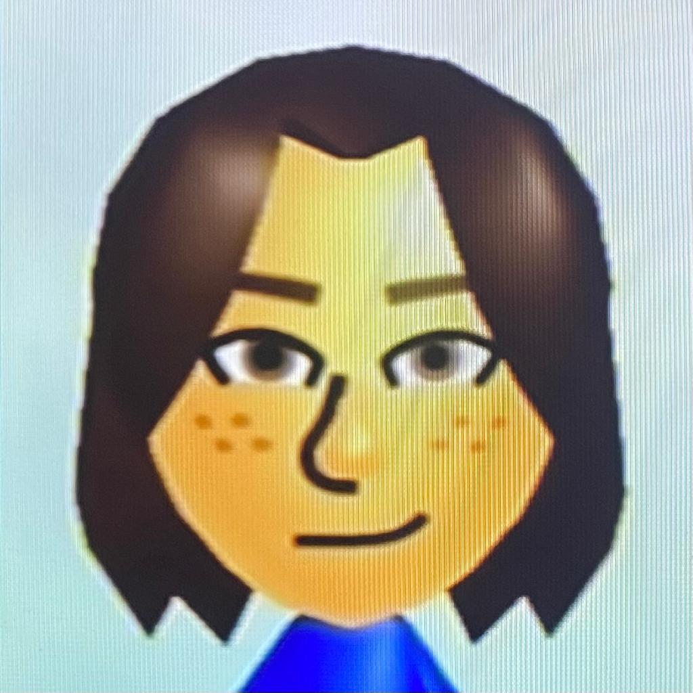
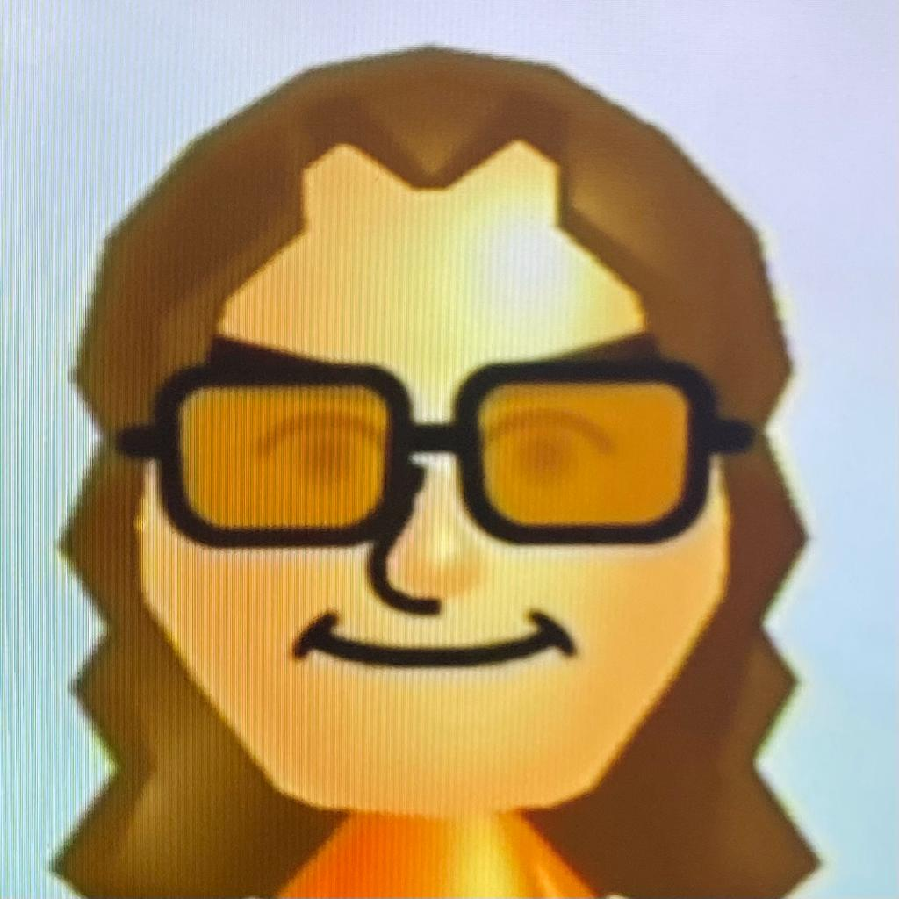

Nombre completo: ADRIÁN LÁZARO LLORENTE
Correo de contacto: adlazaro@ucm.es
Me encanta la música clásica y tocar el piano en mi tiempo libre. Me gusta explorar diferentes composiciones y arreglos, y me esfuerzo por mejorar constantemente mi técnica.
Nombre completo: LAURA SAN MARTÍN DOBLADO
Correo de contacto:lausanma@ucm.es
Me apasiona el senderismo y la exploración de la naturaleza. Me gusta descubrir nuevas rutas y paisajes, y disfruto del aire fresco y la tranquilidad que se encuentra en la montaña.
Nombre completo: DANIEL MARTÍN GONZÁLEZ
Correo de contacto: danmar25@ucm.es
Me gusta coleccionar sellos antiguos y libros de filatelia. Me encanta aprender sobre la historia detrás de cada sello y descubrir nuevos ejemplos para añadir a mi colección.
Nombre completo: INÉS PALERO SAN ROMÁN
Correo de contacto: ipalero@ucm.es
Me gusta el arte y la fotografía. Me encanta capturar momentos y crear imágenes que capturen la belleza y la emoción de un momento o lugar.
Nombre completo: AYA YAHYA AMAR
Correo de contacto: ayayahya@ucm.es
Me apasiona la cocina y el experimentar con nuevos platillos. Me gusta utilizar ingredientes frescos y locales para crear comidas saludables y deliciosas.
Nombre completo: PABLO MORENO CANDUELA
Correo de contacto: pablmo07@ucm.es
Me encanta leer y escribir. Me gusta explorar diferentes géneros y descubrir nuevos autores, y me esfuerzo por mejorar mis habilidades de escritura y comunicación a través de mi amor por la lectura y la escritura.